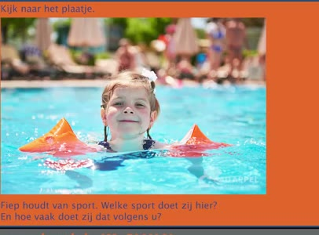
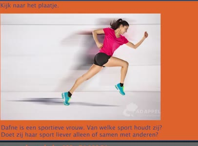
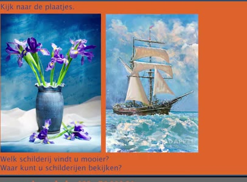
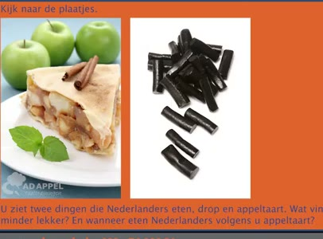
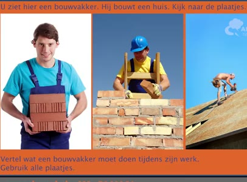
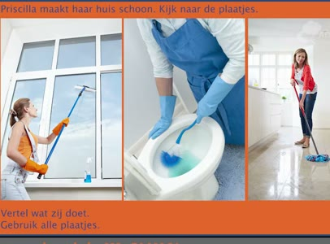

🔊 6 題 🖼️ 6 題 | YouTube ▶
🗣 Het examen is gebaseerd op examenvragen van DUO.
考試是基於 DUO 的考題。
Ik woon in het centrum van een grote stad.
我住在一個大城市的市中心。
🗣 Waar woont u? Vertel ook hoe u dat vindt.
您住哪裡？也說說您怎麼看。
Ik woon in Amsterdam. Amsterdam is de mooiste stad van Nederland.
我住在阿姆斯特丹。 阿姆斯特丹是荷蘭最美的城市。
🗣 Met wie eet u meestal samen? Zeg ook waar u het liefst eet.
您通常與誰一起吃飯？ 也說說您最喜歡在哪裡吃。
Ik eet meestal met mijn partner. Ik eet het liefst thuis.
我通常和我的伴侶一起吃飯。我最喜歡在家吃。
🗣 Waar hebt u Nederlandse les? Zeg ook hoe lang alles hebt. Ik heb Nederlandse les bij ADAPO. Ik heb vier maanden les. Ik heb een nieuwe trui gekocht. Wat hebt u kort geleden gekocht?
您在哪裡上荷蘭語課？ 也說說您上課多久了。 我在 ADAPO 上荷蘭語課。 我上了四個月的課。 我買了一件新毛衣。 您最近買了什麼？
Ik heb gisteren een paraplu gekocht bij de HEMA.
我昨天在 HEMA 買了一把雨傘。
🗣 Wat vindt u beter in uw eigen land dan in Nederland? Vertel ook waarom.
您覺得自己國家的什麼方面比荷蘭好？ 也說說為什麼。
Ik vind het klimaat in mijn eigen land beter. Want ik hou van zon en warmte.
我覺得我自己的國家的氣候比較好。 因為我喜歡陽光和溫暖。
🗣 Welke stad zou u graag willen zien? Zeg ook wat u daar wilt doen.
您想去看哪一個城市？也說說您想在那裡做什麼。
Ik wil graag naar Parijs. Ik wil daar de Eiffeltoren zien.
我想去巴黎。我想在那裡看艾菲爾鐵塔。

🗣 Kijk naar het plaatje. Wie houdt van sport? Welke sport doet zij hier en hoe vaak doet zij dat volgens u?
請看圖片。 誰喜歡運動？ 她在做什麼運動？您覺得她多久做一次？
Zij zwemt. Zij zwemt volgens mij één keer per week.
她游泳。我覺得她大約一週游一次。

🗣 Kijk naar het plaatje. Dafne is een sportieve vrouw. Van welke sport houdt zij? Doet zij haar sport liever alleen of samen met anderen?
請看圖片。 Dafne 是一位運動型的女人。她喜歡什麼運動？ 她喜歡單獨運動還是和別人一起？
Dafne loopt hard. Zij doet dat liever alleen.
Dafne 喜歡跑步。她較喜歡單獨跑步。

🗣 Kijk naar de plaatjes. Welk schilderij vindt u mooier? Waar kunt u schilderijen bekijken?
請看圖片。 您覺得哪幅畫比較漂亮？ 您在哪裡可以看畫作？
Ik vind het schilderij met de bloemen mooi. Ik kan schilderijen in het museum bekijken.
我覺得有花的那幅畫很美。 我可以在博物館裡看畫作。

🗣 Kijk naar de plaatjes. Drop en appeltaart. Wat vindt u minder lekker? En wanneer eten Nederlanders volgens u appeltaart?
請看圖片。 甘草糖和蘋果派。 您覺得哪個比較不喜歡？您覺得荷蘭人什麼時候會吃蘋果派？
Ik vind drop niet zo lekker. Nederlanders eten appeltaart bij een feestje.
我不太喜歡甘草糖。 荷蘭人在派對上會吃蘋果派。

🗣 Vertel wat een bouwvakker moet doen tijdens zijn werk. Gebruik alle plaatjes.
說說建築工人在工作時必須做些什麼。 請使用所有的圖片說明。
Een bouwvakker draagt stenen. Hij maakt een muur. Hij maakt ook een dak.
建築工人會搬磚頭。 他在蓋牆。他也在做屋頂。

🗣 Priscilla maakt haar huis schoon. Kijk naar de plaatjes. Vertel wat zij doet. Gebruik alle plaatjes.
Priscilla 在打掃她的房子。看看圖片。 說說她在做什麼。使用所有圖片。
Zij maakt de vloer schoon. Zij maakt de wc schoon. Zij maakt ook de ramen.
她在清理地板。她在清理廁所。 她也在擦窗戶。